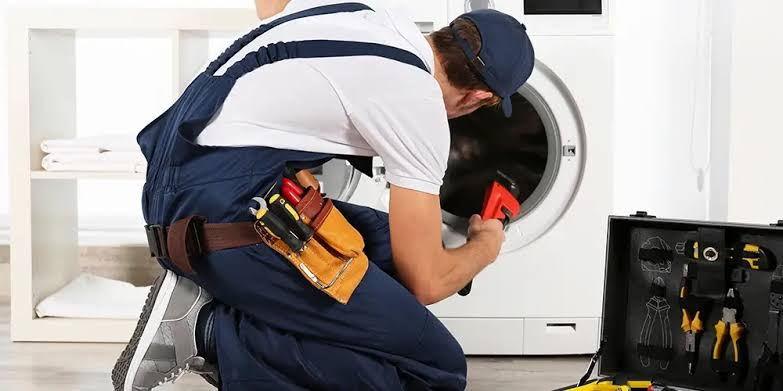

النهج المطور داخل المركز المعتمد لصيانة أجهزة الغسيل
نعلم تماماً مدى الإرباك الذي يسببه عطل غسالة الملابس في المنزل، لذلك نعتمد فلسفة صيانة قائمة على الفحص الشامل وليس مجرد العلاج المؤقت للعطل. يتعامل مهندسونا مع كبرى تقنيات الغسالات الحديثة (الإنفرتر والتحميل الأمامي والعلوي) بهدف إعادة الجهاز ليعمل بنفس مستويات استهلاك الطاقة والهدوء الأصلية.
باستخدام وحدات التشخيص المحمولة، يستطيع فريق الخدمة قراءة السجلات البرمجية المخزنة داخل لوحة التحكم (Main PCB)، مما يساعد في اكتشاف مشاكل تسريب التيار الكهربائي، انسداد حساسات مستوى المياه (Pressure Switch)، أو تآكل فحمات المحرك قبل أن تتسبب في توقف تام للجهاز.
مبادرة الإحلال والتدوير الشامل للغسالات
إذا كانت غسالتك القديمة تتطلب تكاليف إصلاح مرتفعة أو أصبحت غير موفرة للكهرباء، يمكنك الاستفادة من خيار التبديل المباشر؛ حيث نقوم بتقييم حالتها الفنية وتوفير بدائل حديثة من الطرازات الموفرة للطاقة مع إمكانية استخدام قيمة غسالتك القديمة كخصم مباشر على تكاليف الصيانة أو شراء الأجهزة الأخرى كالشورات والديب فريزر والمجففات.
بروتوكول الفحص الفني داخل الموقع
- تغطية سريعة لبلاغات الصيانة داخل نطاق المحافظات خلال 24 ساعة لضمان عدم تراكم الغسيل وتلف المكونات الداخلية.
- إجراء قياس دقيق لجهد الكهرباء الواصل للغسالة وفحص سلامة صمام دخول المياه وطلمبة الصرف قبل البدء في أي تفكيك.
- إطلاع العميل على بيان تفصيلي للتكلفة والقطع المطلوبة بأسعار معتمدة رسمياً، مع إتاحة خيار إلغاء الصيانة واكتفاء بدفع رسوم الفحص القياسية.
- إجراء معظم العمرات الميكانيكية وتغيير المساعدين والسير في منزل العميل دون الحاجة لنقل الجهاز إلا في حالات صيانة الحلة الداخلية المعقدة.
- تقديم وثيقة ضمان مطبوعة ومسجلة بالسيريال نمبر تحتوي على فترة ضمان تصل إلى 12 شهراً على القطع المستبدلة.
لماذا نصرّ على القطع المعتمدة والمطابقة للمواصفات؟
إن تركيبة الغسالات الحديثة تعتمد على الاتزان الحراري والميكانيكي؛ استخدام مساعدين غير أصلية أو سير غير مطابق يؤدي لزيادة الحمل على رولمان البلي وبالتالي اهتزاز وتلف جدار الغسالة الخارجي. نضمن لك دائماً قطع غيار أصلية تأتي في عبواتها المعتمدة لضمان عمر افتراضي طويل.
تغطية شاملة للماركات والسعات المتنوعة
نملك حلولاً مخصصة لكافة الأحجام بدءاً من غسالات الأطفال وغسالات الـ 5 كيلو الاقتصادية، حتى الموديلات الفاخرة ذات سعة 15 و 20 كيلو المزودة بنظام التجفيف الحراري والملاحة الذكية. أرقام التواصل المباشرة المتاحة: 19580 - 17718 - 15607.
منظومة القطع المتوفرة بالشرائح المختلفة:
نوفر أقفال الأبواب الإلكترونية (Door Lock)، السخانات الاستانلس المقاومة للتكلس، محركات Direct Drive، حساسات الحرارة NTC، وجميع كارتات تشغيل الماركات الأوروبية والكورية واليابانية.

كيف تحمي غسالتك من الأعطال المفاجئة؟
العناية الدورية البسيطة توفر عليك أكثر من 60% من مصاريف الصيانة وتمنع الروائح الكريهة وتلف الملابس.
أشهر مؤشرات الأعطال
ظهور كود عطل على الشاشة، توقف برنامج العصر، تجميع المياه داخل الحلة أثناء إيقاف الغسالة، وسماع صوت حشرجة قوي أثناء التجفيف.
خطوات الوقاية الذاتية
إزالة الأجسام الصلبة من الجيوب قبل الغسيل، تنظيف جلبة الباب المطاطية بعد كل غسلة، وتفريغ الفلتر السفلي بشكل منتظم.
الإجراء الفوري عند ملاحظة تسريب مياه أو شرار
توقف مباشرة عن استخدام الجهاز عند ملاحظة تسريب مياه من الأسفل أو صدور صوت غير طبيعي من الموتور، وقم بالاتصال على خطوط الصيانة المباشرة (19580 / 17718 / 15607).
- افصل القابس الكهربائي الرئيسي وأغلق محبس المياه لتجنب حدوث تماس كهربائي أو ماس في لوحة التحكم.
- تجنب محاولة فتح الباب بالقوة في حال احتجاز الملابس بالداخل لتجنب كسر مقبض الباب أو تلف الحساس الميكانيكي.
ارقام التواصل المباشر والسريع
قواعد تشغيلية لتفادي صدمات الموتور
- عدم تشغيل الغسالة لعدة دورات متتالية دون ترك فترة راحة تتراوح بين 30 إلى 45 دقيقة لترديد حرارة الموتور.
- استخدام كميات معتدلة من مساحيق الغسيل لمنع ترسبات الصابون داخل المجاري الداخلية للحلة وعلى أجهزة الحساسات.
- التأكد من استواء أرضية الغسالة واستخدام أرجل الضبط المطاطية لمنع الاهتزاز والضوضاء الزائدة.
مراكز الخدمة ومواعيد تلقي الطلبات
فترات العمل اليومية
تتلقى الأطقم الفنية وخدمة العملاء الاتصالات يومياً من 9:00 صباحاً حتى 10:00 مساءً شاملة العطلات الرسمية.
انتشار الفروع
تغطي شبكة الخدمة محافظات القاهرة الكبرى، الإسكندرية، وجه بحري، ومدن القناة والصعيد عبر مراكز الدعم الفني.